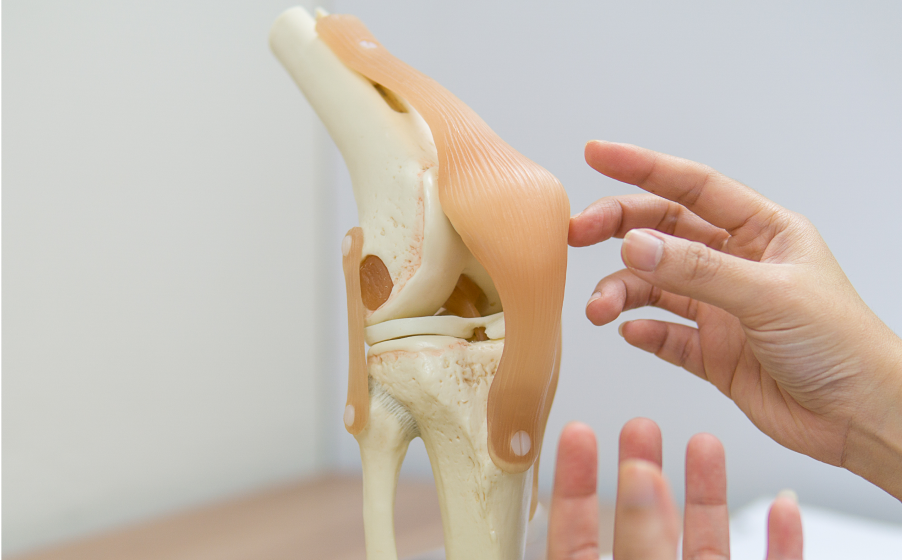
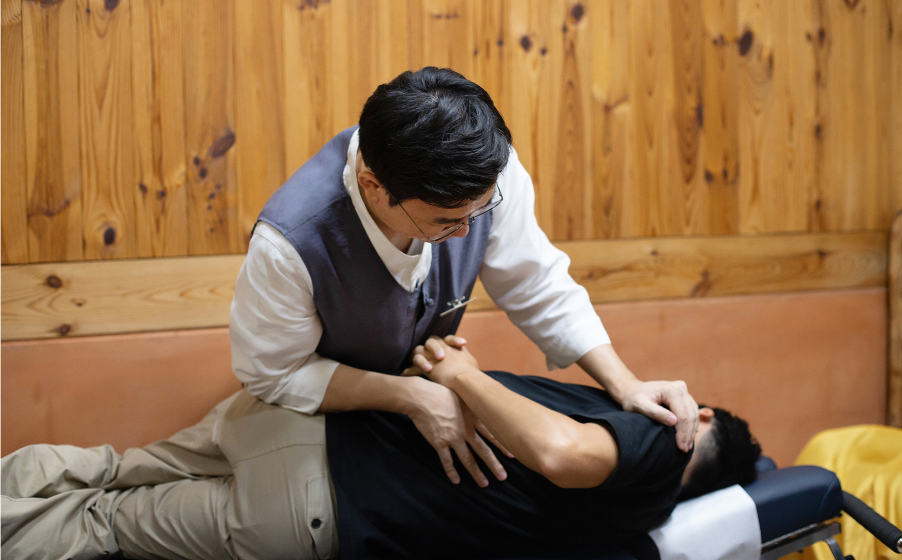

성장 클리닉
한약 치료, 초음파 성장 진찰, 추나 치료를 통한 최적의 성장 환경 조성
성장
성장은 단순히 키를 크게 하는 것을 넘어, 뼈와 근육의 균형 잡힌 발달, 면역력 향상, 건강한 체형 유지까지 고려해야 합니다.
지리산쌍계한의원에서는 한약 치료, 초음파 성장 진찰, 추나 치료를 통해 개인별 성장 상태를 정밀하게 분석하고 최적의 성장 환경을 조성하여 건강한 성장을 돕습니다.
치료 방법

한약 치료
성장 발달을 촉진하고 기혈 순환을 원활하게 조절

초음파 성장 진찰
성장판 상태 및 골격 발달 평가를 통한 맞춤형 성장 관리

추나 치료
척추·골반 정렬 교정 및 성장에 필요한 균형 유지
비염
성장기 비염은 코막힘, 재채기, 콧물, 코 가려움 등의 증상을 유발하며, 집중력 저하와 성장 발달에도 영향을 미칠 수 있습니다.
지리산쌍계한의원에서는 면역력 강화와 호흡기 건강 개선을 목표로, 한약 치료와 침 치료를 통해 비염 증상 완화 및 재발 방지를 돕습니다.
치료 방법

진맥
체질 분석 및 면역력 상태 진단
한약 치료
면역력 강화 및 코 점막 회복 촉진

침 치료
기혈 순환 개선 및 호흡기 기능 정상화
소아 식욕 개선 클리닉
어린이가 밥을 잘 먹지 않으면 성장 발달에 영향을 미칠 수 있으며, 면역력 저하, 집중력 감소, 위장 기능 저하로 이어질 수 있습니다.
지리산쌍계한의원에서는 소화 기능을 개선하고 식욕을 촉진하는 한방 치료를 통해 건강한 식습관 형성 및 영양 흡수 향상을 돕습니다.
치료 방법
진맥
체질 분석 및 면역력 상태 진단
한약 치료
식욕 증진 및 소화 기능 강화
침 치료
식욕 증진 및 소화 기능 강화